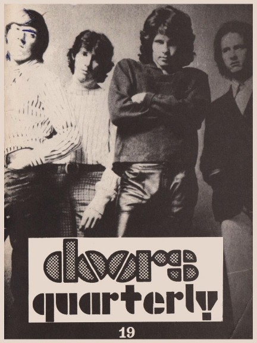

| |

Depending
on your computer's safety settings (antivirus, firewall,
etc.)
the download may generate a standard warning, that is
because the
magazine is a flipbook in the .EXE file format. We
guarantee that
the file is absolutely harmless
and perfectly safe. |
|

A new
window will open with the magazine for you to read online
without the need to download it onto your computer.
Again, we guarantee that it's absolutely
harmless
and perfectly safe. |
|
| |
 |
|
Autumn (fall)
1988. Such a long time ago, almost 30 years; I still
can't believe how quickly time passes and memories fade.
In case you might feel the same, pick up Quarterly #19
(published in the fall of 1988) and re-read it. Some real
classics had
just been released: Jim's "Wilderness" poetry
book (check my -far too short- review), Tobler/Doe's
"The Doors in Their
Own Words", "The Doors in Europe" was due
out soon on VCR Cassette, and a few CDs appeared for
bootleg fanatics; at
that time mostly copied from used vinyl copies (sometimes
you could even hear the vinyl crackling in the
background).
DQ 19 came with the usual mix of news, magazine excerpts
and reviews. For the first time someone (from
"Datebook",
March 1968) analyzed Jim's signature - to an astonishing
conclusion. Have a look at my 'Paris Guide Part One', and
enjoy
some ancient photos of a club meeting in 1988.
The article 'Bootlegging The Doors' might show you that
in 1988 there was nothing special available at all,
although the
discs mentioned in the reviews became true rarities later
on. I really like Don Paulsen's interview with The Doors,
first
published in "Hit Parader" in 1967. Scott
Hyder's 'Symbolic Study - Passages of a Poet and Puer'
was written for the
C.G. Jung Institute and still makes for an interesting
read. 'An Afternoon with Jim Morrison', written by Judith
Simm in
June 1968 for "Teenset Magazine", gives us a
rather personal look on Jim. Most of this interview was
conducted at
Olivia's Place, 2615 Main Street, Jim's favourite soul
kitchen on Venice Beach, while Jim was eating chicken
liver with onions.
Check John Densmore's insightful phone interview with
Billy Pinnell (Part 3 - just in case you had missed Part
4 in DQ 20)
and then my review of the worst vinyl bootleg ever
published. Short but interesting is a story of Jim in
Frankfurt, sent to
be published in DQ 19 on page 38 by Doors fan Oliver
Lüth. Last but not least the first part of my interview
with Robby
Krieger. Check the DQ website for a complete read here:
../features/Robby-Krieger-interview/Robby-Krieger-interview.htm
DQ 19 concluded with a small 1967 print advertising six
days of The Byrds (cancelled) and The Doors at the Whisky
A
Go Go. Wish we could have all been there!
For producing this magazine there weren't any computers
around - everything got typed on my ancient electric
typewriter,
and the bigger letters for headings used to be rub-off
letters on small plastic sheets or plastic lettering
tapes.
No free poster but the issue came along with another
golden bumper sticker.
Enjoy your digital version and let us know what you think
... we will continue soon by publishing a digital version
of DQ 18.
CU and have fun!
Thanks to Kevin Chiotis for all of his work!
A splendid time is guaranteed for all!
And don't forget: Please note that your digital copy of
The Doors Quarterly Magazine 19 hasn't been altered in
any way. You
get it as it was published in the fall of 1988 (!). Be
aware that all addresses (private, phone) are certainly
no longer valid.
Books, vinyl records, CDs and other stuff might not be
available anymore. Please do not respond to any of the
small ads or
blame anyone for incorrect details - all writers just did
their best they could back in 1988. And all this happened
without any
computers, any emails and of course without the internet.
PS: ... if you would like to obtain an original paper
copy of this Doors Quarterly Magazine 19 I must tell you
that there are
no copies left at all!
Thank you!
Rainer Moddemann.
|
|